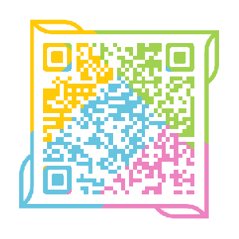

学校概况
学校简介
广西科技大学坐落在中国历史文化名城、中国工业化信息化融合试点城市——柳州市。2013 年 4 月 18 日在教育部的批准下，有原广西工学院和原柳州医学高等专科学校合并建立。广西科技大学是一所以工为主，涵盖了工、管、理、医、经、文、法、艺术和教育九大学科门类，直属广西壮族自治区人民政府管理的普通高等院校。
学校现有东环、柳石和柳东三个校区，占地面积近 4000 亩，目前共有 20 个二级学院、19 个研究所（中心）、2 个直属附属医院、79 个本科专业；现有教职工近 1800 人，全日制在校学生 27000 多人。
截至 2018 年 7 月，学校拥有 7 个硕士学位授权一级学科、1 个硕士学位授权 二级学科、7 个硕士专业学位授权点、3 个博士学位授予权立项建设学科；拥有 3 个国家级特色专业建设点、1个教育部“专业综合改革试点”、3 个教育部职教师资本科专业点建设项目、10 个自治区优质专业、21 门自治区精品课程、1 门自治区级精品视频公开课、3 门自治区级在线开放课程、3 个“广西高等教育创优计划”教学相关项目。近 5 年来，教室承担各类科研项目 1600 余项，其中 22 项获省部级以上科研成果奖、900 余项获国际专利授权。
学校历史
广西科技大学于 2013 年 4 月 18 日经教育部批准由原广西工学院和原柳州医学高等专科学校合并组建而成

学校历史进程
校训
求真近道，明德致新
“求真”：就是“求是”，求真相，求真学，求真理。是用务实的态度追求、探究事物的本质和事物发展的客观规律。作为校训，凸显广西科技大学人实事求是、求真务实的态度和严谨治学、治校的作风。同时，这也符合学校一贯的传统学术精神。
“近道”：出自《大学》“物有本末，事有终始，知所先后，则近道矣。”意思指天地万物皆有本有末,凡事都有开始和终了，如果我们能够探求到物象的本末、事理的终始，明白它们的来龙去脉、前因后果,就能接近或掌握事物的本来面目及其发展规律了。在大学里，求知求学是大学人之根本，求知求学就应当追根溯源，探求本真，求得真知，切不能一知半解，不求甚解。因此，“近道”是学校师生应当提倡和推崇的。
“明德”：出自《大学》“大学之道，在明明德”。“明德”意为明其至德，明其根本，明其人格，是为人处世最高的学问准则，为“大学之道”的纲要。作为校训，彰显学校注重培养学生具有完善人格的教育理念，提倡内圣自明的学问准则。
“致新”：致者，达到也。新者，更新，创新。致新之意就是追求和达到更新、更高的境界。作为校训，体现学校坚持与时俱进，科学发展，不断推动事业向更高目标前进的追求。同时，也表达了广大师生员工对学校建设和自身发展不断取得新成果、新成就的期盼与祝愿。
校园景点
广西科技大学坐落在中国历史文化名城、中国工业化信息化融合试点城市——柳州市，是国务院学位委员会批准的学士、硕士学位授权单位，是“卓越医生教育培养计划”试点高校，是“卓越工程师教育培养计划2.0”入选高校，是“新工科研究与实践项目”入选高校，直属于广西壮族自治区人民政府管理。2013年经自治区学位委员会批准，正式确定为2013-2018年立项建设新增博士学位授予单位。是一所以工为主，包含工、管、理、经、文、法、艺术、教育、医学等9大学科门类的多科性高等学校。
该校于2013年4月18日经教育部批准由原广西工学院和原柳州医学高等专科学校合并组建而成，原广西工学院始建于1958年，1982年合并广西轻工业学院、广西机械工业学院、广西石油化工学院，1985年从南宁迁至柳州办学。原柳州医学高等专科学校创建于1951年，2003年经教育部批准升格为“柳州医学高等专科学校”。
据2017年2月官网资料显示，该校有东环、柳石和柳东（规划建设中）3个校区，占地面积近4000亩；设20个二级学院，拥有4个附属医院，开设有79个本科专业；学校现有教职工近1800人，有专任教师1400多人，有全日制本、专科学生、研究生、留学生共27000余人。
关于我们
易班是提供教育教学、生活服务、文化娱乐的综合性互动社区。网站融合了论坛、社交、博客、微博等主流的Web2.0应用，加入了为在校师生定制的教育信息化一站式服务功能，并支持WEB、手机客户端等多种访问形式。易班在高校中设立了学生工作站，开展了丰富多彩的校园文化活动，已经成为全国教育系统的知名文化品牌。
易班先后荣获第四、第五届全国高校百佳网站评选最佳文明社区奖、最佳思政创新奖，全国高校校园文化建设优秀成果特等奖，上海市第五届优秀网站评选最佳网站、优秀网站，上海市第十届教育科研教育改革实验一等奖，腾讯网2011年度改变教育新力量奖等称号。
加入我们
易班是一个友爱、团结、互助的大家庭，欢迎你的加入哦~
或扫描下方二维码进行报名
